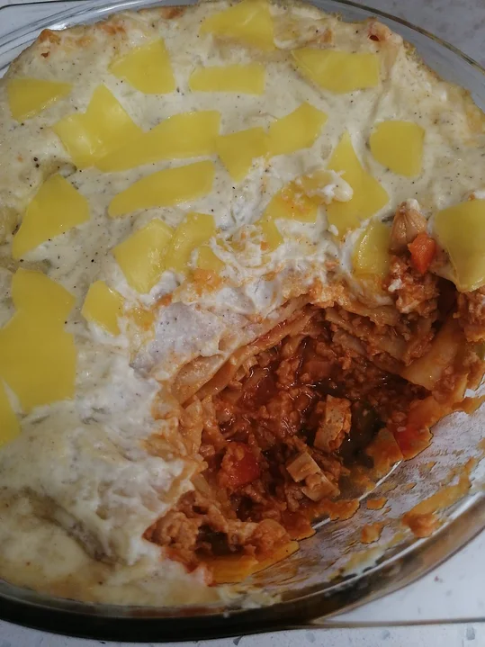

Lasanha de Bolonhesa de Soja
Tempo de preparação
5min
Horas de Cozimento
50min
Tempo Total
55min
Porções
5

Ingredientes
Recheio:
- 1 cebola picada
- 1 alho picado
- azeite q.b
- soja fina q.b
- sal q.b
- pimenta preta q.b
- pimentão doce q.b
- 1 copo de vinho branco
- ½ copo de polpa de tomate simples
- ½ copo de polpa de tomate sabor cebola e alho
- 1 ccf de massa de pimentão
- ½ pimento vermelho cortado aos quadradinhos pequenos
- ½ pimento verde cortado aos quadradinhos pequenos
- ½ pimento amarelo cortado aos quadradinhos pequenos
- 1 salsicha vegan cortada aos quadradinhos pequenos
- placas de massa fresca para lasanha
Molho branco:
- ½ cebola picada
- 1 embalagem (200 ml) natas de soja
- sal q.b
- pimenta branca q.b
- noz moscada q.b
Instruções
Recheio:
- Coloque a soja a demolhar 30min. antes de começar a cozinhar.
- Num tacho alto salteie a cebola e o alho num fio de azeite. Quando transparentes, junte a soja para absorver o sabor do estrugido, mexa durante três minutos e tempere com sal, pimenta preta e pimentão doce; volte a mexer durante mais três minutos até as especiarias ativarem e junte um copo de vinho branco, meio copo de polpa de tomate simples + meio copo de polpa de tomate sabor a cebola e alho, junte também uma colher de café de massa de pimentão.
- Misture tudo até os ingredientes estarem incorporados uns nos outros (deixar saltear durante uns 5 a 7 minutos).
- De seguida, adicione os pimentos coloridos e a salsicha vegan (retifique os temperos e polpas de tomate se necessário) juntamente com ¼ de copo de água.
- Deixe cozer, e mexa de vez em quando para a soja não pegar.
- Quando os pimentos estiverem cozidos está pronto e pode desligar o fogo.
- Comecemos então a fazer o molho branco que vai servir de cobertura.
Molho branco:
- Num tacho pequeno salteie a cebola num fio de azeite. Quando estiver transparente adicione a embalagem de natas de soja, tempere com uma pitada de sal, pimenta branca e noz moscada.
- Caso o molho esteja muito líquido, numa tigela coloque uma colher de sopa de farinha maisena com um pouco de água. Dissolva a farinha e junte aos bocadinhos a mistura nas natas até ficar um molho mais homogêneo.
- Por fim, para terminar, numa travessa disponha primeiramente o recheio, intercalando sempre assim com a massa fresca de lasanha (recheio-massa-recheio-massa), terminando assim com a massa para dispor o molho branco por cima e opcionalmente alguns pedacinhos de queijo vegan.
- Está pronta a levar ao forno por 25 a 30 minutos!